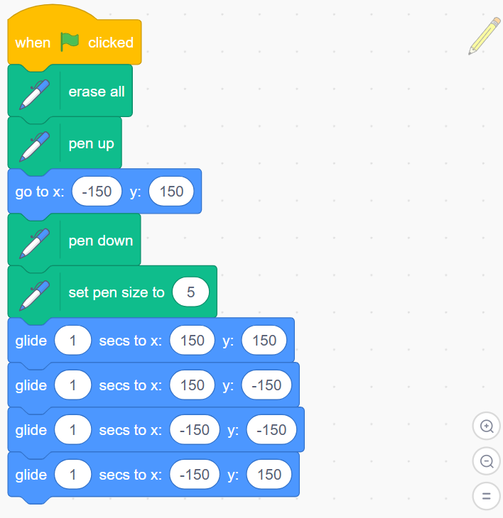
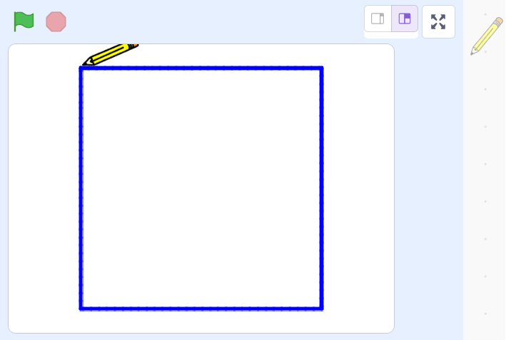

رسم المربع
A) المربع — الطريقة الأسهل
أقل عدد ممكن من اللبنات: حلقة تكرار 4 + حركة ودوران.

كود سكراتش لرسم مربع
when green flag clicked
erase all
pen up
set pen size to (5)
go to x:(-225) y:(160)
pen down
repeat (4)
move (320) steps
turn clockwise (90) degrees
end
pen up
النتيجة النهائية لرسم المربع
يمكن تغيير 320 حسب المساحة المتاحة على المسرح.
B) المربع — باستخدام النقاط الثابتة (X/Y)
استخدم أربع نقاط أركان: (-150,150) → (150,150) → (150,-150) → (-150,-150) → العودة.

كود سكراتش لرسم مربع باستخدام النقاط الثابتة
when green flag clicked
erase all
pen up
set pen size to (5)
go to x:(-150) y:(150)
pen down
glide (1) secs to x:(150) y:(150)
glide (1) secs to x:(150) y:(-150)
glide (1) secs to x:(-150) y:(-150)
glide (1) secs to x:(-150) y:(150)
pen up

النتيجة النهائية لرسم المربع
C) المربع — باستخدام متغيّر (طول_الضلع)
when green flag clicked
erase all
pen up
set pen size to (5)
go to x:(-225) y:(160)
set [طول_الضلع v] to (150)
pen down
repeat (4)
move (طول_الضلع) steps
turn clockwise (90) degrees
end
pen upD) ترقية: لبنة مخصّصة — ارسم مربع(الضلع)
تعريف اللبنة
define ارسم مربع (الضلع)
repeat (4)
move (الضلع) steps
turn clockwise (90) degrees
endالاستخدام
when green flag clicked
erase all
pen up
set pen size to (5)
go to x:(-225) y:(160)
pen down
ارسم مربع (150)
pen up
×